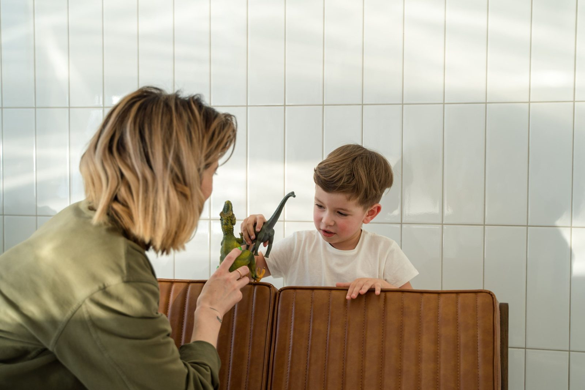

Εργοθεραπεία
Βοηθά το παιδί να γίνει πιο αυτόνομο στην καθημερινότητα — στο παιχνίδι, στο σχολείο και στο σπίτι. Μέσα από στοχευμένες δραστηριότητες δουλεύουμε την κίνηση, τον συντονισμό και τον τρόπο που το παιδί επεξεργάζεται τα ερεθίσματα γύρω του.
- δυσκολεύεται στο κράτημα του μολυβιού, στο ψαλίδι ή στο κούμπωμα
- φαίνεται αδέξιο ή κουράζεται εύκολα στις κινητικές δραστηριότητες
- αντιδρά έντονα (ή ελάχιστα) σε ήχους, αγγίγματα ή κίνηση
- δυσκολεύεται να συγκεντρωθεί και να οργανωθεί

Λογοθεραπεία
Στηρίζει την ομιλία, τον λόγο και την επικοινωνία, ώστε το παιδί να κατανοεί και να εκφράζεται με άνεση και σιγουριά. Η δουλειά γίνεται μέσα από παιχνίδι και δραστηριότητες που ταιριάζουν στην ηλικία του.
- άργησε να μιλήσει ή χρησιμοποιεί λίγες λέξεις για την ηλικία του
- δυσκολεύεται να προφέρει κάποιους ήχους
- δυσκολεύεται να καταλάβει οδηγίες ή να διηγηθεί κάτι
- κομπιάζει ή επαναλαμβάνει συλλαβές όταν μιλά

Ψυχολογική υποστήριξη
Ένας ασφαλής χώρος όπου παιδιά και έφηβοι μπορούν να εκφράσουν ό,τι νιώθουν, να κατανοήσουν τα συναισθήματά τους και να χτίσουν αυτοεκτίμηση. Με σεβασμό στον ρυθμό και στην ιδιαιτερότητα του κάθε παιδιού.
- έχει άγχος, φόβους ή έντονες εκρήξεις θυμού
- δείχνει απότομες αλλαγές στη διάθεση ή στη συμπεριφορά
- δυσκολεύεται στις σχέσεις με φίλους ή στο σχολείο
- περνά μια μεγάλη αλλαγή στη ζωή της οικογένειας
Οι γονείς είναι μέρος της ομάδας.
Η πρόοδος συνεχίζεται στο σπίτι.
Συμβουλευτική γονέων
Σας ακούμε, απαντάμε στις ερωτήσεις σας και σας δίνουμε πρακτικά εργαλεία για την καθημερινότητα. Γιατί όταν οι γονείς νιώθουν σιγουριά, το νιώθει και το παιδί.
- θέλετε καθοδήγηση για τη συμπεριφορά ή τα όρια
- έχετε μόλις λάβει μια διάγνωση και αναρωτιέστε «τι κάνουμε τώρα;»
- θέλετε να στηρίξετε στο σπίτι τη θεραπεία του παιδιού
- νιώθετε κουρασμένοι ή αβέβαιοι και χρειάζεστε κάποιον να μιλήσετε
Κάθε παιδί μαθαίνει
με τον δικό του τρόπο.
Μαθησιακή υποστήριξη
Εξατομικευμένη στήριξη για παιδιά που δυσκολεύονται στη μάθηση. Βρίσκουμε τον τρόπο που ταιριάζει στο παιδί, ώστε να ξαναβρεί τη χαρά και την αυτοπεποίθηση στο σχολείο.
- δυσκολεύεται στην ανάγνωση, τη γραφή ή την ορθογραφία
- μπερδεύεται με τους αριθμούς και τις πράξεις
- δυσκολεύεται να οργανώσει τη μελέτη του
- έχει χάσει την αυτοπεποίθησή του στο σχολείο

Ομαδικά προγράμματα
Σε μικρές ομάδες, τα παιδιά μαθαίνουν να συνεργάζονται, να περιμένουν τη σειρά τους, να εκφράζονται και να λύνουν μικρές διαφωνίες — σε ένα περιβάλλον ασφαλές και χαρούμενο.
- είναι ντροπαλό ή δυσκολεύεται να κάνει φίλους
- δυσκολεύεται στο ομαδικό παιχνίδι και στη συνεργασία
- θέλει να εξασκήσει δεξιότητες που δουλεύει στις ατομικές συνεδρίες
Τα παραπάνω είναι ενδεικτικά και δεν αντικαθιστούν την αξιολόγηση από ειδικό.
Δεν ξέρετε από πού να ξεκινήσετε;
Είναι απολύτως φυσικό. Στη δωρεάν πρώτη συνάντηση γνωριμίας συζητάμε μαζί σας και σας προτείνουμε τι μπορεί να βοηθήσει το παιδί σας.
Συχνές ερωτήσεις γονέων
Χρειάζομαι παραπομπή ή διάγνωση για να έρθω;
[ΑΠΑΝΤΗΣΗ ΑΠΟ ΤΟ ΚΕΝΤΡΟ]
Καλύπτονται οι θεραπείες από ταμείο;
Συνεργαζόμαστε με ταμεία. [ΠΟΙΑ ΤΑΜΕΙΑ ΚΑΙ ΠΩΣ ΓΙΝΕΤΑΙ Η ΔΙΑΔΙΚΑΣΙΑ]
Πόσο διαρκεί μια συνεδρία και πόσο συχνά γίνεται;
[ΔΙΑΡΚΕΙΑ / ΣΥΧΝΟΤΗΤΑ]
Θα ενημερώνομαι για την πρόοδο του παιδιού μου;
[ΑΠΑΝΤΗΣΗ ΑΠΟ ΤΟ ΚΕΝΤΡΟ]